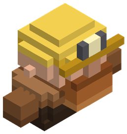
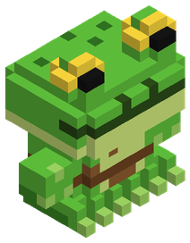
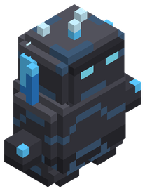
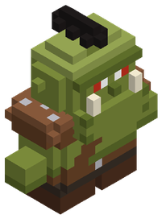

Razas y habilidades
Hay 10 razas jugables. Cada una cambia tus estadísticas base, tiene un rasgo propio y tres ramas de habilidades. Ganas un punto de habilidad cada 2 niveles, hasta el nivel 500.
 Avianovida ×0,9, velocidad ×1,1Inmune al daño de caída
Avianovida ×0,9, velocidad ×1,1Inmune al daño de caída
Enano Minerovida ×1,1, armadura ×1,3, velocidad ×0,9 Elfo Silvanovida ×0,9, daño ×1,05, armadura ×0,9, velocidad ×1,15Salto aumentado
Elfo Silvanovida ×0,9, daño ×1,05, armadura ×0,9, velocidad ×1,15Salto aumentado
Hombre Ranadaño ×0,95Nado más rápido, Salto aumentado Goblinvida ×0,85, daño ×1,05, velocidad ×1,15
Goblinvida ×0,85, daño ×1,05, velocidad ×1,15
Golemitavida ×1,35, daño ×1,05, armadura ×1,4, velocidad ×0,8 HumanoEquilibradoExperiencia extra, Recarga a distancia más corta
HumanoEquilibradoExperiencia extra, Recarga a distancia más corta
Orcovida ×1,2, daño ×1,15, regeneración ×0,9, velocidad ×0,95Sed de batalla Druida (Sylva)vida ×1,05, regeneración ×1,2Regeneración entre la flora
Druida (Sylva)vida ×1,05, regeneración ×1,2Regeneración entre la flora No-muertodaño ×1,05, regeneración ×0,7Vigor nocturno
No-muertodaño ×1,05, regeneración ×0,7Vigor nocturno